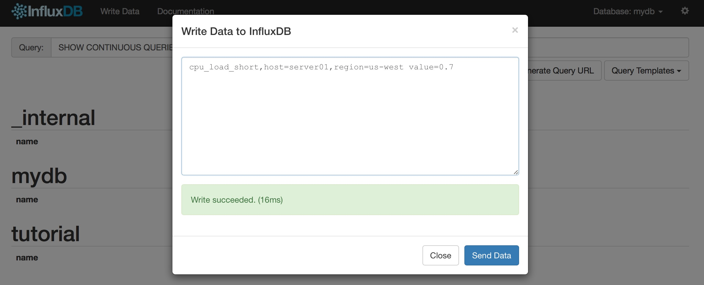

influxdb简介
安装
默认端口：8383
默认用户：root
默认密码：root
外链：github
wget https://dl.influxdata.com/influxdb/releases/influxdb_1.0.0_amd64.deb
sudo dpkg -i influxdb_1.0.0_amd64.deb
sudo /etc/init.d/influxdb start
基本概念
- influxdb的数据由时间序列(time series)组织，包含度量值(measurement)
- 时间序列有0个或多个记录点(points)，每个指标一个离散样本
- measurement，就相当于关系数据库中的table，他就是tag，field，time的容器；从概念上讲，可以把measurement想象是一个sql表，row行是主索引，tags和fields是表中的列，tag是索引，fileds不是索引
- 对于influxDb的measurement来说，field是必须的，并且不能根据field来排序；
- Tag是可选的，tag可以用来做索引，tag是以字符串的形式存放的；
- retention policy，保留策略，用于决定要保留多久的数据，保存几个备份，以及集群的策略等；
- series，a series is the collection of data that share a retention policy, measurement, and tag set，其实一个series就是一个测点，或者说一条曲线
- point，就是某个series的同一个时刻的多个field的value，就组成了一个point；其实就是一般曲线上的一个点。
- points包含timestamp和measurement，至少一个key-value域(fields)，例如 value=0.64 or 15min=0.78，0或多个key-value标签(tags)，包含元数据(metadata)，例如host=server01，region=EMEA，dc=Frankfurt。
- InfluxDb不需要做schema定义，这意味着你可以随意的添加measurements, tags, and fields at any time，
<measurement>[,<tag-key>=<tag-value>...] <field-key>=<field-value>[,<field2-key>=<field2-value>...] [unix-nano-timestamp]
cpu,host=serverA,region=us_west value=0.64 payment,device=mobile,product=Notepad,method=credit billed=33,licenses=3 1434067467100293230 stock,symbol=AAPL bid=127.46,ask=127.48 temperature,machine=unit42,type=assembly external=25,internal=37 1434067467000000000
观察一下数据部分：
cpu_load_short,host=server01,region=us-west value=0.64,value2=0.86 1434055562000000000
这行数据含有两个空格，将之分为三个部分：
第一部分：“cpu_load_short,host=server01,region=us-west”
第一部分称为key，key中包含了measurement name和tags（tags又分为tag key和tag value，tags可以有多个），例子中的“cpu_load_short”就是measurement name，“host”和“reginon”是tag key，“server01”和“us-west”是对应的tag value。在我看来，measurement name和MySQL数据库的表名是等同的。
另外，在tag value中的空格应以“\”加上空格表示，若有多个tag value，可以使用逗号隔开，但是应以“\”加逗号表示。
第二部分：“value=0.64,value2=0.86”
第二部分称为Field，同样和tags的形式相同，都是键值对的形式，但是tags中的值必须是string类型，而Field中的值可以为Integer、float、Boolean、string类型，若为Integer类型，则值后必须加“i”，否则该值为float类型，比如value=23意味着这个值23是float类型，而value=23i，意味着值23是Integer类型。Boolean类型的值的表示方式有很多，直接写成：t, T, true, TRUE, f, F, false或 FALSE都可以。
第三部分（可选）：“1434055562000000000”
第三部分称为Timestamp，是时间戳，如果该部分省略，则默认将当前时间的时间戳插入数据库，否则按照用户输入的时间戳插入。
如下图所示，返回204说明数据录入正常
parallels@ubuntu:~$ curl -i -XPOST 'http://localhost:8086/write?db=mydb' --data-binary 'cpu_load_short,host=server01,region=us-west value=0.9'
HTTP/1.1 204 No Content
Content-Type: application/json
Request-Id: 32dd51e7-1380-11e7-84fc-000000000000
X-Influxdb-Version: 1.0.0
Date: Tue, 28 Mar 2017 06:31:38 GMT
#python代码
from influxdb import InfluxDBClient
json_body = [
{
"measurement": "cpu_load_short",
"tags": {
"host": "server01",
"region": "us-west"
},
"time": "2017-03-12T22:00:00Z",
"fields": {
"value": 0.7,
"score": 0.4
}
}
]
client = InfluxDBClient('localhost', 8086, 'root', '', 'mydb') # 初始化（指定要操作的数据库）
client.write_points(json_body) # 写入数据，同时创建表

外链：readthedocs

wordcloud词云
生产词云的原理其实并不复杂，大体分成5步：
- 对文本数据进行分词，也是众多NLP文本处理的第一步，对于wordcloud中的process_text（）方法，主要是停词的处理
- 计算每个词在文本中出现的频率，生成一个哈希表。词频计算相当于各种分布式计算平台的第一案例wordcount， 和各种语言的hello world 程序具有相同的地位了，呵呵。
- 根据词频的数值按比例生成一个图片的布局，类IntegralOccupancyMap 是该词云的算法所在，是词云的数据可视化方式的核心。
- 将词按对应的词频在词云布局图上生成图片，核心方法是generate_from_frequencies,不论是generate（）还是generate_from_text（）都最终到generate_from_frequencies
- 完成词云上各词的着色,默认是随机着色
词语的各种增强功能大都可以通过wordcloud的构造函数实现，里面提供了22个参数，还可以自行扩展。
遇到的一个小坑，刚开始运行这十行代码的时候，只显式了若干彩色的小矩形框，中文词语显式不出来，以为是万恶的UTF8问题，debug一下，发现print 结巴分词的结果是可以显示中文的，那就是wordcloud 生成词语的字体库问题了。开源的好处来了，直接进入wordcloud.py 的源码，找字体库相关的代码
FONT_PATH = os.environ.get("FONT_PATH", os.path.join(os.path.dirname(__file__), "DroidSansMono.ttf"))
wordcloud 默认使用了DroidSansMono.ttf 字体库，改一下换成一个支持中文的ttf 字库， 重新运行一下这十行代码，就可以了。当然，解读代码后有更优雅的方法。
外链：github地址

{kind=link}
Copyright © 2015 Powered by MWeb, Theme used GitHub CSS.